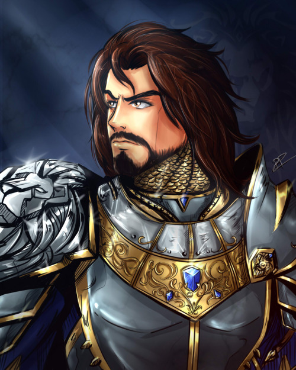

Anduin Lothar
Anduin Lothar

Sir Anduin Lothar, the Lion of Azeroth, was the last true descendant of the ancient Arathi bloodline, a knight champion of the Kingdom of Azeroth during the First War.
Lothar grew up in the court of Azeroth as a childhood friend of both the Prince, Llane Wrynn, and Medivh. The trio shared many adventures in the Azerothian wilderness in their youth.
Lothar joined Stormwind's military, was later knighted and eventually become the leader of Stormwind's armies.
 Medivh
Medivh
Medivh was the last Guardian of Tirisfal, an ancient line of protectors bestowed with great powers to fight the Buring Legion.
However, he was corrupted even before birth and possessed by the spirit of the demonlord Sargeras who used Medivh in his plan to conquer Azeroth.
King Llane Wrynn I
Llane Wrynn I was the ruler of the Kingdom of Azeroth during the First War. He was the child of King Adamant Wrynn III and Lady Varia, and the father of King Varian Wrynn. He is also the grandfater of Prince Anduin Wrynn.